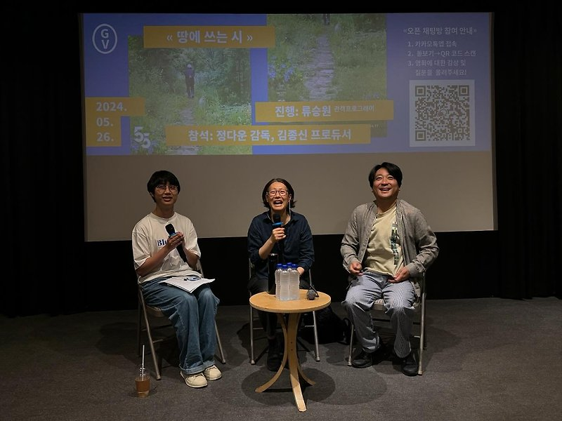

매거진 삼삼오오 · GV 모먼트
<땅에 쓰는 시> 정다운 감독, 김종신 프로듀서 / 2024.05.26.


<땅에 쓰는 시> 관객과의 대화 기록 2024.05.26.
참석 정다운 감독, 김종신 프로듀서
진행 류승원 모더레이터
기록 김가율
류승원: 안녕하세요? 저는 오늘 <땅에 쓰는 시> GV를 맡은 관객 프로그래머 류승원이라고 합니다. 일요일 1시라는 이른 시간에 이렇게 영화를 보러 와주셔서 감사합니다. 그러면 GV를 시작해 보도록 하겠습니다. 감독님, PD님 간단하게 자기소개 부탁드립니다.
정다운: 안녕하세요? 저는 <땅에 쓰는 시>를 만든 정다운입니다. 옆에 이분은 PD님이시자 제 짝꿍이고요. 저기 앉아 있는 친구는 선유도 공원 앞을 뛰어다니고 마지막에 「모두 다 꽃이야」를 부른 김단우 군입니다. 또 저는 김단우 군의 엄마이기도 합니다. 반갑습니다.
김종신: 안녕하세요? 같이 영화 만들고 있는 프로듀서 김종신입니다. 반갑습니다.
류승원: 많은 GV를 하셨겠지만, 대구 관객분들과는 첫 만남이잖아요. 그래서 간단하게 <땅에 쓰는 시>라는 영화를 어떻게 시작하게 되셨는지 설명해 주시면 감사하겠습니다.
정다운: 저희가 다큐멘터리 작업을 굉장히 많은 시간을 들여서 하거든요. 돈이 없어서 그런 것도 있지만 다큐멘터리는 촬영 시간을 오래 잡으면 그 과정에서 이야기가 만들어지기도 해서 그냥 시간을 믿고 따라가는 것도 없지 않아 있어요. 그래서 다큐멘터리를 완성한다기보다는 멈춘다고 표현해요. 아주 오랫동안 찍어야 하고 영혼을 불살라가면서 작업을 해야 하죠. 저희가 선생님을 잘 알고는 있었지만 실제로 뵌 거는 처음이었어요. 원래는 다른 작품 때문에 선생님 인터뷰를 하러 갔었거든요. 실제로 뵈니까 너무 멋지신 거예요. 카리스마도 있으시고 말씀하시는 것도 유머러스하시고요. 그리고 조경계에서 요청도 있었어요. 선생님에 대해, 조경에 대해 다뤄줬으면 좋겠다고. 왜냐하면 저희가 건축, 공간, 자연 이런 이야기를 사람하고 연결하는 작업을 하는 팀이거든요. 결정적으로 인터뷰를 다 하고 나서 당신 핸드폰으로 손자가 이렇게 예쁘다고 보여주시는데 태어난 지 얼마 안 되었을 때인데 진짜 이쁘더라고요. 손자하고 제 아들하고 1살 차이거든요. 그래서 제가 질 수 없다고 선생님하고 사진 배틀을 하기도 했었어요. 저는 너무 천재적인 그런 지점에는 별로 관심이 없는데 선생님은 훌륭하시면서도 인간적인 매력이 넘치시는 거예요. 그래서 이 ‘할마씨’를 꼭 찍어야겠다고 생각하게 되었습니다. (웃음)
류승원: 이 영화는 정영선 선생님의 일상에 대한 스케치도 있지만 중점적으로 다뤄지는 부분은 선생님께서 조경한 풍경이 가장 주된 이미지들일 텐데요. 전작인 <이타미 준의 바다>와 <위대한 계약: 파주, 책, 도시>가 기본적으로 어느 정도 건축을 해놓은 건축물들을 다뤘다면 이 영화 속에서 제시되는 공간들은 비록 조경한 공간이기는 하지만 자연 풍경인 부분들이 꽤 많잖아요. 자연 풍경들을 담아내는 데 어려움이 많으셨다고 들었는데, 그런 것들을 어떤 기준점과 원칙들을 세워가면서 촬영에 임하셨는지 궁금합니다.
정다운: 일단 자연 다큐멘터리 찍는 분들을 존경합니다. 가장 좋은 자연과 가장 좋은 장면을 잡으려면요 그냥 거기서 사는 게 최고예요. 그래서 너무 괴로워요. 저희는 맨날 혼나고 시작해요. ‘왜 이제 왔냐, 좋은 거 지나갔는데 뭐 하다가 지금 왔냐?’ 하시거든요. 선생님은 제일 중요한 작업을 아주 초기부터 쭉 하시는 스타일인 거예요. 그러니까 얼마나 치열하게 작업을 하시고 또 저희가 얼마나 못 믿어 우시겠어요. 저도 알죠. 그리고 그때, 그 시간에, 그곳에 있는 사람을 못 이깁니다. 딱 그 시간에 제가 할 수 있는 것에 집중해서 영혼을 불사르는 것밖에 없어요. 그래서 진짜 치열하게 작업을 할 때는 아무 얘기도 안 해요. 다른 데 신경을 쓰거나 농담 따먹을 기분이 아니에요. 샷을 잡을 때도 선생님을 잡고 그다음에 공간을 잡고 하면 두 배로 복잡해져요. 선유도 공원 같은 경우는 다르지만, 대부분 공간과 시간이 한정적이기 때문에 그 순간에 찍을 수 있는 걸 찍어야 해요. 제 원칙이라고 한다면 제가 먼저 가거나, 먼저 가이드를 해야 한다는 건데요. 실제 선생님께서 어떤 걸 중요하게 생각했는지를 완벽하게 리서치를 하고 가야 하는 거죠. 그리고 저는 실제 클로즈업 샷보다 전체 공간감으로 하는 와이드 샷을 많이 사용합니다. 그 식물이 거기에 있다는 게 중요한 거지 예쁜 꽃으로서 오브제로 중요한 게 아닌 거죠. 그래서 클로즈업 샷을 거의 안 써요. 그 공간의 맥락이 더 중요하기 때문에. 선유도 공원이나 선생님 정원 같은 경우에는 사계절을 찍었기 때문에 똑같은 프레임에서 달라 보이게 찍는 지점이 있고, 계절마다 달라 보이는 거를 의도적으로 다른 공간을 찍어서 다른 프레임으로 보여주는 게 있어요. 이 두 개가 같이 가는데 놀라울 정도로 매번 찍을 게 많아요. 계절감에서 보면 담쟁이가 겨울에는 뼈다귀처럼 나잖아요. 또 여름에는 이렇게 풍성하고 가을에는 단풍 색깔로 변할 때의 아름다움이 있으니까 그런 측면에서 클로즈업 샷을 실제 많이 안 쓰고요. 인물도 마찬가지예요. 인물을 찍을 때 클로즈업 샷에서 카메라의 시선이 굉장히 폭력적이라고 생각을 하거든요. 저는 카메라를 함부로 들지 말라고 얘기를 하고 실제 그렇게 하면 안 된다고 생각해요. 다큐멘터리는 제가 제 마음대로 하얀 도화지 위에 마음대로 선을 그을 수 있는 게 아니라, 대상의 인생을 제 프레이밍에 의해서 영상 영화로 바꾸는 것이기 때문에 그래서 그걸 굉장히 조심하는 편이죠.
류승원: PD님께 질문드리겠습니다. 이 영화 속에 많은 공간이 나오잖아요. 그런 것들에 대한 스케줄링도 쉽지 않으셨을 텐데 정영선 선생님의 일정을 맞춰서 가신 건지, 어떻게 그런 것들을 프로덕션 하셨는지 궁금합니다.
김종신: 일단 대전제는 과거의 영광을 조명하지 말자는 것이었어요. 그래서 예술의 전당이나 예전에 하셨던 프로젝트를 저희가 막 공들여서 찍은 바는 별로 없어요. 지금 서울 국립현대미술관에서 전시회가 있는데 그거를 위해서 다시 찍은 건 있지만 영화에서 과거의 영광을 조명하는 그런 건 하지 말자고 했고요. 어디서 찍을 것인지에 대해서는 선생님하고 조율했는데요. 이게 해도 해도 계속하게 되더라고요. 중간에 코로나도 있었고 이러면서 조율만 몇 번 한 것 같아요. 그리고 저희 제작비가 예를 들어 만 원이면 만 원이 딱 마련된 상태에서 촬영하는 게 아니에요. 그래서 제작비 마련을 위해서 다른 일을 또 해야 하거든요. 그런 것들 때문에 스케줄을 조정하는 데에 어려운 점들이 좀 있었죠. 다큐멘터리는 다 어려워요.
Q: 저는 질문보단 감상을 말씀드리고 싶은데요. 조경이라는 게 경치를 만든다는 뜻이잖아요. 근데 만든다기보다는 자연에 있는 거를 어떻게 자연스럽게 가지고 올 수 있을까를 생각하신 게 잘 보였고, 중국, 일본이랑 조경이 또 다른데 한국적인 부분들을 잘 잡으신 거 같아서 너무 좋았습니다.
정다운: 감사합니다. 지금 조경 뜻 얘기하셨는데 실제 조경이라는 단어가 ‘경치를 짓다’잖아요. 근데 이 뜻이 우리 철학과도 맞지 않고, 한국 조경계에서도 조경이라는 단어를 바꿨으면 좋겠다고 해서 실제 그 운동도 있어요. 그리고 조경이라는 단어가 일본에서 온 단어거든요. 어떤 분은 ‘조경이라는 말은 필요 없다 땅이 짓는 시로 바꿔도 되겠다’고 말씀하신 분도 계셨죠.

Q: 원래부터 아드님이 출연하는 계획이 있으셨나요?
정다운: <이타미 준의 바다>에서는 저희 첫째 아들이 뛰어다닙니다. 이 작품은 둘째 아들이 뛰어다니는 거고요. 저희 영화는 아이들이 항상 나와요. 저희 작업은 미래 세대에게 바치는 연서, 사랑의 편지라고 저희가 설명하거든요. 아이들에게 더 좋은 삶, 좋은 환경, 좋은 가치를 잘 전달하는 전달자 역할을 하고 싶은 것 같아요. 이타미 준 선생님은 건축, 자연, 인간과의 관계를 굉장히 중요하게 생각하시는 분이에요. 그래서 정영선 선생님께서 딱 인정하신 분이 이타미 준 선생님이세요. 제가 지금 여기서 잘 먹고 잘사는 것보다 아이들의 삶이 더 중요한 거죠. 선생님과 손자와의 정원으로 끝나는 구조로 잡은 것도 그 이유예요. 아이가 상징이니까. 선생님이 아이를 대하실 때 표정이나 톤이 확 바뀌시거든요. 이게 인간적인 측면에서도 그렇지만 ‘항상 아이들을 위해서 좀 더 좋은 것을’이라고 늘 표현하세요. 그렇기 때문에 저희가 하려는 작업의 방향하고 너무 잘 맞았던 거 같습니다.
Q: 영화 제목을 어떻게 짓게 되셨나요?
정다운: 제가 만들었다고 하면 얼마나 좋겠어요. 선생님 표현이세요. 당신 철학을 표현하시는 거죠. 그리고 당신 철학을 설명하실 때 늘 대동여지도부터 시작하세요. 김정호 님께서 애민 사상으로 만드신 거잖아요. 어떤 마음으로 이걸 만드셨고, 우리 국토를 사랑하는 그 손길과 발길로 만드셨으며, 우리 국토가 얼마나 아름다운지에 대해 얘기하시죠. 그렇게 만든 지도 자체가 예술품이 되었는데, 그 과정들이 선생님이 작업하시는 과정하고 맞닿아 있다고 생각하거든요. 그리고 저는 영화의 스타일과 주제 의식을 웬만하면 오프닝 시퀀스에 다 집어넣으려고 노력해요. 사람을 사람답게 그리고 사람의 생명력을 유지하는 데 아주 중요한 요소가 자연적 요소라고 생각하기 때문에 그런 것들을 좀 표현을 하고 싶었어요.
김종신: 그리고 선생님께서 새로 직원이 들어오면 시를 제본한 책을 하나 선물 해주세요. ‘시를 쓰는 마음으로 조경을 해라’라고 말씀하시지는 않지만 한번 보라 하면서 주시는데 거기에 ‘땅에 쓰는 시’라고 제목을 붙여놓으셨더라고요.
Q: 인터뷰도 다 거절하신 선생님께서 이 작품을 특별히 동의하시게 된 계기가 궁금합니다.
정다운: 나물 달달 볶듯이 얘네들이 나를 그렇게 볶았다고 표현하세요. (웃음)
김종신: 정다운 감독이 계속 설득했는데 여러 가지 얘기를 드렸지만, 조경이라는 게 간단하게는 마당에서부터 크게는 우리나라 4대강과 국토에 대한 건데요. 그거를 조경가들이 하는 거예요. 그래서 그 전문가들이 하는 역할이 우리의 삶과 굉장히 밀접해 있고 중요한 역할을 하고 있다는 거를 알리고 싶은데 선생님께서 후배들을 위해 그런 역할을 해주셔야 하지 않겠냐고 말씀드렸죠.

정다운: 어차피 당신께서도 조경계를 위해서 해야 할 일이 있다고 생각하셨고, 저도 그렇게 생각하거든요. 우리 것의 아름다움과 그 문화의 깊이를, 알면 알수록 놀래요. 저는 우리나라가 왜곡된 시선으로 교육 시키고 우리 스스로의 걸 무시하는 그런 과거들이 제대로 회복된 것 같지 않은 거예요. 그런 사실을 작정하고 알리고 싶은 마음이 있었고요. 다큐멘터리스트의 숙명이기도 해요. 왜냐하면 처음부터 나 찍어달라고 하는 분은 제가 찍지도 않죠. 제가 존경하고 이 다큐멘터리에 영혼을 불살라가면서 찍고 싶은 분들을 설득해서 카메라 앞에 세우는 거부터가 사실 다큐멘터리의 시작이기도 해요. 어떻게 진정성을 보여드리고, 어떤 방향성을 가지고 작업을 하겠다고 설득을 한 거죠.
Q: 수많은 영상 중에 많은 것을 편집하셨을 텐데 편집하시면서 우선순위를 둔 사안들이 있으신지 궁금하고요. 땅에 쓰는 시가 현재 감독님과 PD님께 어떤 의미로 남아 있으신지 궁금합니다.
김종신: 두 번째 질문부터 답을 드리면 저는 영화를 잘 못 봐요. 영화를 보면 그렇게 울어요. 찍을 때 힘들었던 생각도 나고 관객분들께 감사하기도 하고 여러 가지 복합적인 감정이 드는 거 같습니다.
정다운: 어떤 작업을 찍어야 하는지에 대한 거는 처음부터 리서치를 하고 또 선생님께서 꼭 찍어야 한다고 말씀하신 것으로 자연스럽게 정해졌고요. 선유도 공원하고 선생님의 정원은 사계절을 찍겠다는 게 메인 컨셉이었습니다.
Q: 시작은 어쨌든 나물 달달 볶듯이 시작하셨는데 6년 동안의 과정에서 우리 이제 촬영 여기까지면 됐다고 느낀 게 언제였는지 그리고 다큐 촬영은 어떻게 마무리하는지 궁금했습니다.
정다운: 네 맞아요. 그게 완성이 아니라 멈춘다는 표현인 거예요. 저희가 이 정도면 충분하다, 부족하다는 느낌은 덜 든다는 생각이 들 때 마무리하게 되고요. 혹시 부족한 게 있으면 추가 촬영을 또 하고요. 그래서 결국은 멈춘다는 표현인데 그때쯤에 신기하게 선생님께서 젤리코상 수상자로 선정되신 거예요. 너무 신기하죠. 다큐멘터리는 정말 시간이 만들어 주는 게 있어요. 저는 사실, 상이 중요하다고 생각하지는 않아요. 근데 이 상은 한국 경관의 현대적 완성을 어떻게 보면 세계적으로 인정받았다는 건데 반대로 ‘제발 눈 좀 뜨세요!’라는 의미인 거죠. 우리 걸로 해도 정말 괜찮거든요. 사실 이 장면이 제 스타일이나 톤은 아니에요. 하지만 선생님에 대한 존경으로 시작했고 또 다큐멘터리스트로서 욕심도 생기기도 하고 안 넣기가 어려운 것도 생기더라고요.
류승원: 더 많은 대화를 나누고 싶지만 이제 시간이 다 돼서 마지막으로 오늘 GV에 대한 간단한 소감과 함께 혹시 차기작을 준비하고 계신 것이 있다면 말씀해 주시면 좋을 거 같습니다.
정다운: 그다음 작품은 무슨 작품으로 오게 될지 모르겠지만 사실 굉장히 많기는 해요. 저는 우리 것을 알리는 작업을 진짜 하고 싶어요. 혹시 김종학 선생님 아세요? 설악산의 꽃 화가이신데 건축, 도시 그다음에 조경 경관이었다고 하면 이제 자연을 아트로 푸는 또 엄청난 걸 해보려 하고 있습니다.
김종신: 저희가 서울 가는 기차가 한 3시간 후라서 시간이 많이 남았어요. 그래서 밖에 맛있는 커피도 팔고 하니까 밖에서 얘기를 또 나누면 좋을 것 같습니다. 오늘 이렇게 찾아주셔서 감사합니다.
류승원: 네 그럼 <땅에 쓰는 시> GV를 마치도록 하겠습니다. 오늘 와주신 관객분들 감사드립니다.